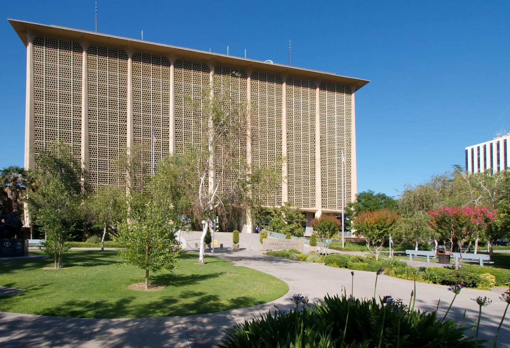
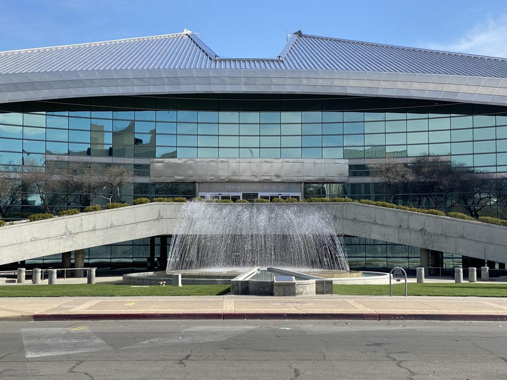
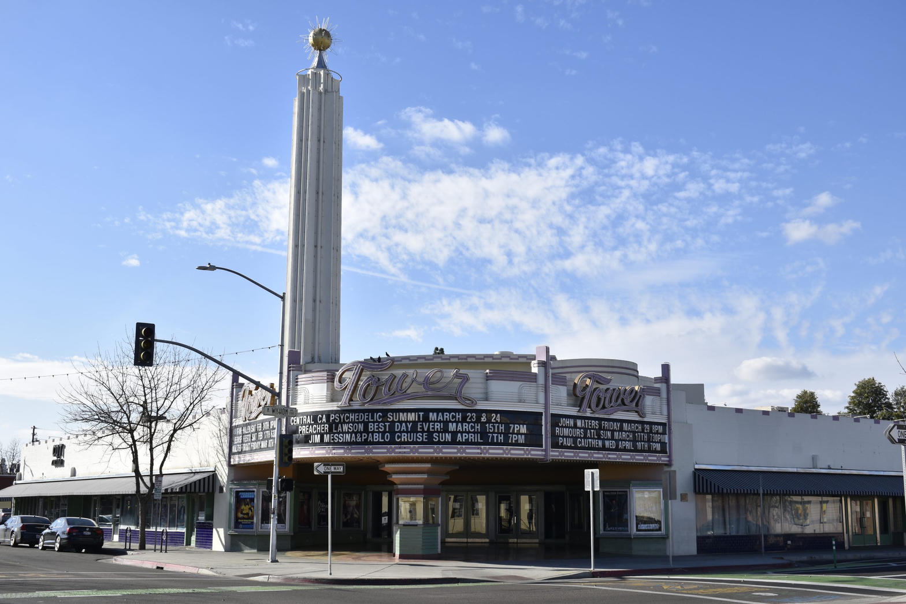
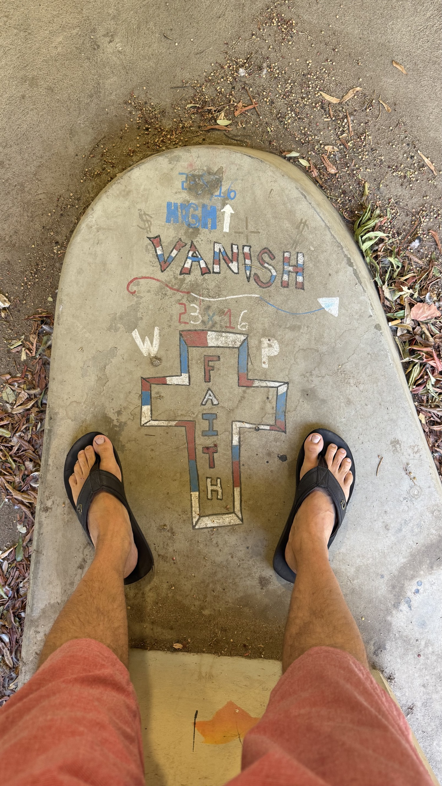

Lord, we stand on public ground You already own. Open ears that have been numbed by powder and by pride. Let no one here confuse a court date with repentance. In the name of Jesus. Amen.
Seven days ago, about eleven in the morning, I began preaching in this city under the Lord's guidance and called it what it is. I am a self-proclaimed preacher. Last week I stood under another man's invitation and another man's microphone. Today I am back on the same ground with my own amplifier. Same street. Same people. Same God. The only thing that changed is who is holding the cord.
I posted ten minutes out so anyone who saw the notice could walk over. I am not broadcasting the sermon as a show. I am warning the neighborhood while there is still daylight.
Matthew 4:17
From then on Jesus began to preach, “Repent of your sins and turn to God, for the Kingdom of Heaven is near.”
Last Saturday I already preached the Health and Safety Code. Then I spent three weekdays at the courthouse park. I heard from local law that city ordinances are going to be enforced more tightly. That is something I have been praying for. I believe the Lord answered. I also still watched people use hard drugs in a Dollar Tree parking lot as if the old years of impunity were a sacrament. They are not.
Isaiah 55:6-7
Seek the Lord while you can find him. Call on him now while he is near. Let the wicked change their ways and banish the very thought of doing wrong. Let them turn to the Lord that he may have mercy on them. Yes, turn to our God, for he will forgive generously.
Hear the clock in that verse. While you can find him. While he is near. That is not a slogan. That is a deadline spoken in mercy.
What the law actually says now
I am not inventing a charge. California voters passed Proposition 36 in November 2024. It took effect December 18, 2024. It added Health and Safety Code section 11395. Possess a hard drug such as fentanyl, heroin, methamphetamine, cocaine, or PCP, with two or more qualifying prior drug convictions, and a prosecutor may charge a treatment-mandated felony. Elect treatment, finish it, and the charge can be dismissed. Refuse it, and the felony path remains. Take your pick.
The Judicial Council counted 19,104 felony 11395 cases in reporting courts in 2025. In May 2026 Sheriff John Zanoni said Fresno County agencies had booked 1,422 people on charges that would not have produced a jail booking under the old Prop 47 habit. District Attorney Lisa Smittcamp called the measure a repair after a decade of chaos. Those are their statements. The door you thought was glued shut is on a hinge again.

Romans 13:3-4
For the authorities do not strike fear in people who are doing right, but in those who are doing wrong. Would you like to live without fear of the authorities? Do what is right, and they will honor you. The authorities are God’s servants, sent for your good. But if you are doing wrong, of course you should be afraid, for they have the power to punish you. They are God’s servants, sent for the very purpose of punishing those who do what is wrong.
I will not baptize a party with that text. I will not pretend a booking is the new birth. A jailer can stop a hand. A jailer cannot give you a new heart. If your plan is to keep using until a deputy writes the citation, you have already chosen the harder fork. Get right with God before they put you in a van. After the van, you can still repent. You will just do it with less time, less quiet, and a record that follows you to every porch in 93728.

What the street showed this week
I am not the prosecutor. I will not stand here and convict a neighbor by name. I will tell you what the public record and my own eyes already show on these blocks.
On September 9 a public CrimeRadar card marked theft and a disturbance outside a 7-Eleven on North Blackstone in 93701. On September 10 a Belmont dispatch in 93728 called a priority for indecent exposure. The auto-transcript said a woman was aggressive, cussing, walking eastbound, and asked if any units were ready. Those cards are not Scripture. They are the neighborhood talking to a radio.
This week I also stood in the civil line with restraining-order papers after documented harassment. I will not read a private number into a microphone. Predators count on the old slowness and on a church that blesses the sidewalk and never names the sin. That season is thinner than it was.

People still sleep with a boot for a pillow on the curb. People still treat the Dollar Tree lot like a chapel of exemption. Last week's sermon did not empty those lots. I did not expect it to. The Word is seed. The ordinance is a rake. Neither one replaces the other.
Isaiah 5:20
What sorrow for those who say that evil is good and good is evil, that dark is light and light is dark, that bitter is sweet and sweet is bitter.
Calling a felony a lifestyle is that verse in a shopping cart. Calling mandatory treatment oppression, while children walk past open use, is that verse with a cigarette. The Lord is not confused. The voters were not confused when they passed the act. The only confusion left is in the person who thinks the clock is still 2015.
The fork that actually saves
Section 11395 offers a civil fork: treatment or felony. Heaven offers a better fork, and it does not wait for two prior convictions.
Ezekiel 18:30-32
Therefore, I will judge each of you, O people of Israel, according to your actions, says the Sovereign Lord. Repent, and turn from your sins. Don’t let them destroy you! Put all your rebellion behind you, and find yourselves a new heart and a new spirit. For why should you die, O people of Israel? I don’t want you to die, says the Sovereign Lord. Turn back and live!
Turn back and live. That is the whole sermon in four words. Not turn back and manage. Not turn back and wait for a caseworker who may not have a bed. Turn back and live. The evaluation in 11395 is useful. The new heart in Ezekiel is necessary. You can complete a program and still love the dark. You cannot meet the Lord and keep calling the dark a right.
Proverbs 28:13
People who conceal their sins will not prosper, but if they confess and turn from them, they will receive mercy.
Concealment is the old neighborhood religion. Hide the pipe. Hide the theft. Hide the hands that grab and the mouth that threatens. Mercy starts when the hiding stops. Confession is not a Facebook live. Confession is telling the truth to God and then walking a different direction while the deputy is still two blocks away.
John 8:31-32
Jesus said to the people who believed in him, “You are truly my disciples if you remain faithful to my teachings. And you will know the truth, and the truth will set you free.”
Freedom is not the absence of a cop. Freedom is remaining in the teaching. If your freedom requires a dirty lot, a frightened clerk, and a woman cursed on Belmont at noon, that is not freedom. That is a leash you like because it is familiar.
Acts 3:19
Now repent of your sins and turn to God, so that your sins may be wiped away.

Charge
If you are using hard drugs on these lots, hear the fork without poetry. Treatment or felony is the state's sentence. Repent or perish is older and kinder. Do not wait for the radio to ask if any units are ready. Do not wait for a third prior. I have my own microphone now. The Lord had His own Word the whole time.
If you are being hunted, use the civil door. File. Keep the event numbers. Do not baptize vengeance and call it ministry. The God who answers prayer for enforcement also forbids you to become the thing you fear. If you came because a notice fired ten minutes ago, you are on time. Take your pick in the courthouse if you must. Take His mercy first.
Ezekiel 18:32
I don’t want you to die, says the Sovereign Lord. Turn back and live!
Sources
- California Proposition 36 (2024), Homelessness, Drug Addiction, and Theft Reduction Act. Effective December 18, 2024. Health and Safety Code section 11395, treatment-mandated felony for hard-drug possession with two or more qualifying prior drug convictions. Penal Code section 666.1 for repeat theft.
- Judicial Council of California, Proposition 36 court data report covering calendar year 2025. Reporting courts received 19,104 felony HSC 11395 cases and 15,508 felony PC 666.1 cases.
- Fresno County public statements, May 8, 2026. Sheriff John Zanoni: 1,422 bookings countywide on charges that previously would not have produced jail bookings. District Attorney Lisa Smittcamp on Prop 36 as a response after Prop 47. Fresno Police Chief Mindy Casto on retail-theft arrests. Reported by KSEE/KGPE and the Fresno Bee.
- California Policy Lab, Prop 36 prison-admission updates through mid-2026, HSC 11395 and PC 666.1.
- Public CrimeRadar cards dated September 9, 2026, North Blackstone Avenue, Fresno 93701, theft and disturbance at a 7-Eleven storefront, and September 10, 2026, South Belmont Avenue, Fresno 93728, indecent-exposure priority with an auto-generated dispatch transcript. Transcripts are not official reports.
- Photographs: Fresno County Courthouse park, Wikimedia and court-site civic views. Fresno City Hall exterior, Downtown Fresno Partnership. Tower Theatre, Fresnoland civic coverage. United States Capitol, public-domain street photograph. Neighborhood faith marking, preacher's own photograph of public concrete.